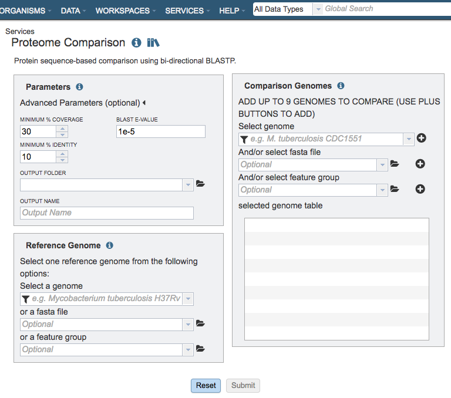
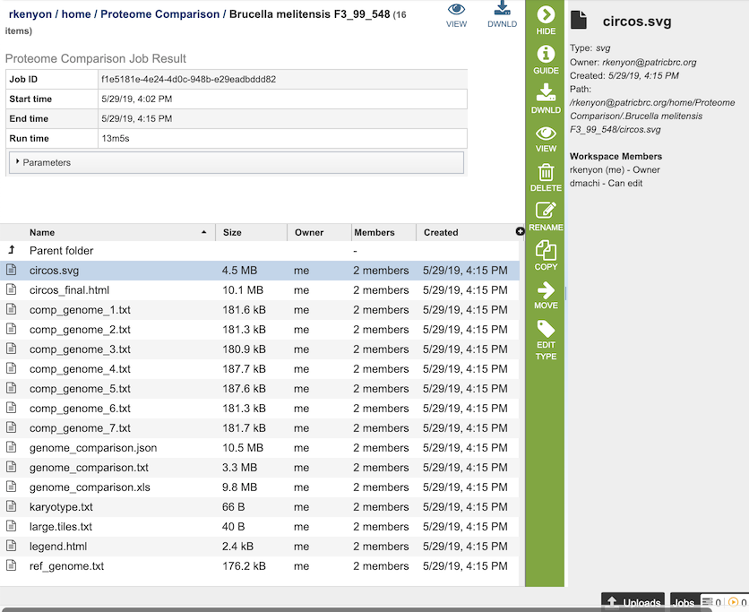
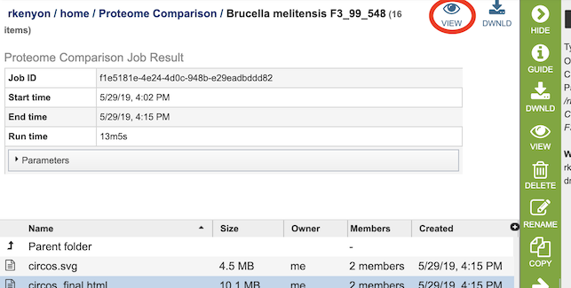
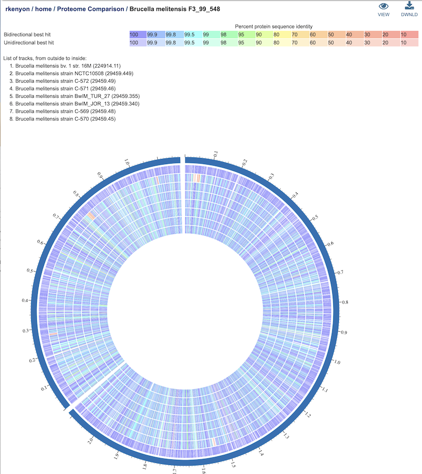

Proteome Comparison Service¶
Overview¶
The bacterial Proteome Comparison Service performs protein sequence-based genome comparison using bidirectional BLASTP. This service allows users to select up to eight genomes, either public or private, and compare them to a user-selected or supplied reference genome. The proteome comparison result is displayed as an interactive circular genome view and is downloadable as a print-quality image or tabular comparison results.
See also¶
Using the Proteome Comparison Service¶
The Proteome Comparison submenu option under the Services main menu (Protein Tools category) opens the Proteome Comparison input form (shown below). Note: You must be logged into BV-BRC to use this service.

Options¶

Parameters¶
Advanced parameters:¶
Minimum % coverage: Minimum percent sequence coverage of query and subject in blast. Use up or down arrows to change the value. The default value is 30%.
BLAST E value: Maximum BLAST E value. The default value is 1e-5.
Minimum % Identity: Minimum percent sequence identity of query and subject in BLAST. Use up or down arrows to change the value. The default value is 10%.
Output Folder¶
The workspace folder where results will be placed.
Output Name¶
Name used to uniquely identify results.
Reference Genome Selection¶
Select a reference genome from the genome list or a FASTA file or a feature group. Only one reference is allowed.
Select a genome¶
Type or select a genome name from the genome list.
Or a FASTA file¶
Select or upload an external genome file in protein FASTA format.
Or a feature group¶
Select a feature group from the workspace to show comparison of specific proteins instead of all proteins in a genome.
Comparison Genomes Selection¶
Select up to total of 9 genomes from the genome list or FASTA files or a feature groups and use the plus buttons to place the genomes to the table .
Select genome¶
Type or select a genome name from the genome list.
And/or select FASTA file¶
Select or upload an external genome file in protein FASTA format.
And/or select feature group¶
Select a feature group from the workspace.
Output Results¶

The Proteome Comparison Service generates several files that are deposited in the Private Workspace in the designated Output Folder. These include
circos.svg - a Scalable Vector Graphics (SVG) image showing the proteome comparison in a cicular view.
circos_final.html - a webpage displaying the SVG file of the proteome comparison result.
comp_genome_X.txt - the list of features in the comparison genome. The service generates a comp_genome_X.txt file for each comparison genome (where X is the genome number).
genome_comparison.xls - an Excel file of the comparison results containing the best BLAST hits for each compared genome to the reference genome. The columns in the table are as follows (for each genome):
_contig - accession number for contig in reference genome
_gene - order number for gene in the genome
_aa_length - size in amino acids
_patric_id - BV-BRC locus tag
_locus_tag - RefSeq locus tag
_gene_name - gene name
_plfam_id - local protein family
_pgfam_id - global protein family
_function - functional annotation
_start - start location of the gene on the contig
_end - end location of the gene on the contig
_strand - strand that gene is located on
_hit - type of BLAST hit: bi-directional, uni-directional, or missing (for comparison genomes only)
genome_comparison.json - JSON format of the comparison results
genome_comparison.txt - text file format of the comparison results
karyotype.txt - the karyotype file of the Circos output that defines genome contig id, size and color.
large.tiles.txt - the large tile file of the Circos output that provides the tile track information
legend.txt - the color legend for the percent protein sequence identity of the bidirectional and unidirectional best hits.
ref_genome.txt - the list of features in the reference genome.
Proteome Comparison Viewer¶

Clicking on the View icon at the upper right portion of the job result page will display an interactive circular viewer of of the comparison results, with color-coding for protein percent identity relative to the best hit on the reference genome. Mousing over a feature (gene) will display its BV-BRC locus tag, and clicking on it will display the feature page for that gene.

References¶
Overbeek, R., et al., The SEED and the Rapid Annota on of microbial genomes using Subsystems Technology (RAST). Nucleic acids research, 2014. 42(D1): p. D206‑D214.